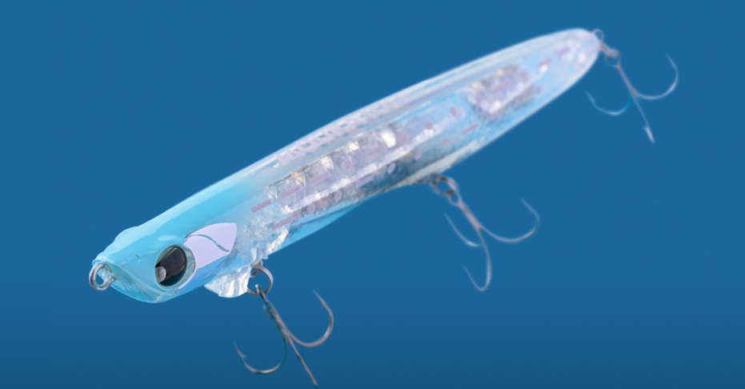
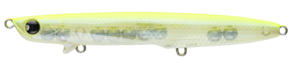
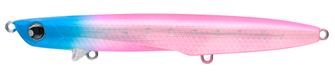
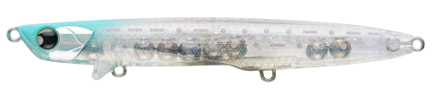
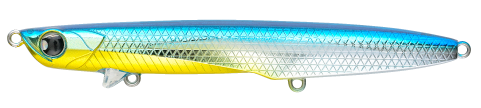

moura105S
moura105SはPOP SEA CREWの新作シンキングペンシルです。
水面直下であらゆるベイトに対応できる。ドックウォークシンペンが誕生！

画像出典:POP SEA CREW公式HP
スペック
- メーカー
- POP SEA CREW
- 長さ
- 105 mm
- 重さ
- 17 g
- フック
- #8×3
- リング
- #2
- レンジ
- 0-20cm
- タイプ
- シンキングペンシル
- 沈下タイプ
- シンキング
- アクション
- スラローム
- ターゲット
- シーバス
- 価格
- 2180円(税込)
- 発売日
- 2026-05-04
- 開発者
- 大野 ゆうき
モウラ105Sの特徴
喰わせのレンジを外さない。ショートリップが刻む、究極のレンジキープ。
-
独自のリップ位置が生む「ドッグウォークアクション」
リップの位置を後方にずらした設計により、細身のシンペンながら左右への軽快な首振りアクションが可能です。
-
水面直下を攻める「高いレンジキープ力」
ショートリップがアクションとレンジを強力に維持し、表層を意識したシーバスへ正確にアプローチできます。
-
多彩なベイトパターンと浅場への対応力
あらゆるベイトパターンに適合し、水深の浅い場所や藻の多いエリアでもその性能を遺憾なく発揮します。
モウラ105Sの使い方・得意な状況
基本的な使い方は、スローなただ巻き。やや頭から入るようなスローピッチなアクションになります。
細身のシンペンには珍しく、左右に首を振るドックウォークアクションもでき、アピールに効果的！
オススメのシチュエーションはシャローや藻の多い場所で、表層付近のレンジキープが容易で使いやすい。
シーズンは問わず、イワシ、サッパ、イナッコ、サヨリなど幅広いベイトパターンで使用可能です。
ワンポイント
ベイトによって動かし方を変えるのが釣果への近道。
バチや弱ったベイトを演出したいときはスローなただ巻き。
ドックウォークは、逃げ惑うイワシやサッパなどを演出して捕食スイッチを入れます。15㎝近い大型イナッコパターンでの実績あり！
人気カラー

ハッピーレモン大野ゆうきイチオシカラー。表層狙いにはこれを投げておけばOK

ブルピンシャドーボーンピンクはなぜか釣れる。ピンク系不足の方はこちら

グラビティクリアカラーはベイトサイズに左右されない。定番カラー。

PSCPOP SEA CRWEを代表するカラー。ベイトが大きめの時はこれ。
画像出典:POP SEA CREW公式HP
大野ゆうき開発人気ルアー
- ガルバ64s
- BANQ
- グラバーHi